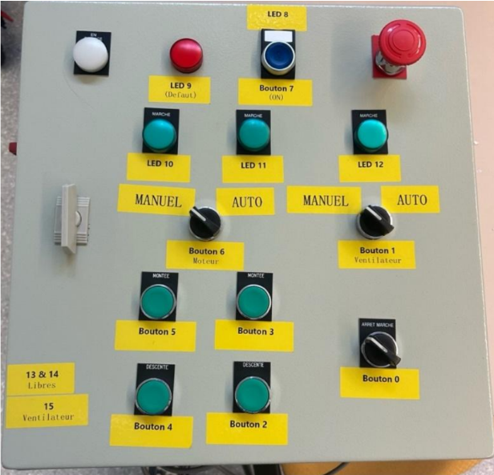

Design and development of an intelligent ventilation system for greenhouses. The project aims to optimize plant growth conditions through automated climate control, using a "low-tech" approach focused on efficiency, durability, and cost-effectiveness.
In modern agriculture, maintaining an optimal climate is crucial for crop yields. However, many high-end systems are too expensive or complex for small-scale
As the Project Leader, I coordinated a team to build a robust solution that automates temperature and humidity regulation. We focused on creating a system that uses folding windows actuated by stepper motors, controlled by a centralized electronic unit.
My work focused on three pillars: Electronics Design, Software Architecture, and Project Management. I designed the wiring diagrams and integrated various sensors (DHT11/22) and actuators (Stepper motors with A4988 drivers).
On the software side, I implemented a robust C++ firmware. Instead of a simple loop, I built an automated state machine that prevents "jittering" (frequent opening/closing) by implementing hysteresis logic. I also managed the Git workflow to ensure smooth collaboration between contributors.